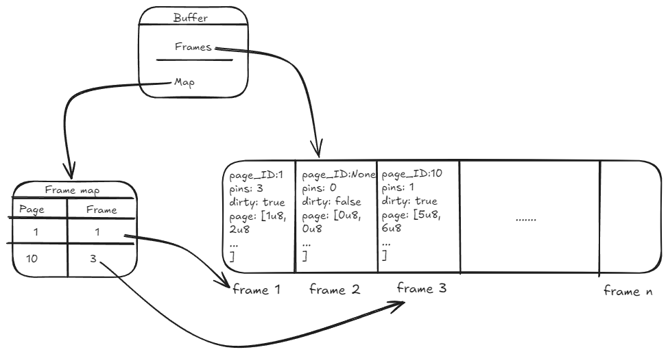

Storage manager - the buffer
Table of Contents
An overview of the implementation for the buffer manager, one of the three major services of the storage subsystems.
Intro
Having finished at least a preliminary implementation of the slotted pages, it is time to move on to the next part of the storage subsystem: its managers. In the original implementation, there were three of them:
- File manager: handling the I/O with the file system
- Buffer manager: implementing the page buffer
- Storage manager: providing access into the storage system The approach for Rust will be similar — the plan is to have the same three services. The lesson learned from Java being that the storage manager in particular can easily slip into having more responsibilities than it should. As a general rule, no service in the storage subsystem should deal with anything more granular than a page.
The buffer
While the storage manager provides access to the entire module, the buffer manager is more interesting and far more important; therefore, I have started with it.
The page buffer (or page cache) is one of the more important components of the engine. Because disk access is much slower than RAM, maintaining the active pages in an in-memory buffer is critical for the performance of the system. It is also an important player in the implementation of the whole steal/no force ARIES algorithm and the entire logging & transactionality approach - none of which I will cover in this post, as they are complex topics that require their own separate analysis.
For the purpose of this stage, though, the buffer manager plays a simpler role: caching data pages after they have been read from disk and providing callers access to them when requested. For now, we will keep to a minimum more advanced features like dirty page tracking, automatic flushing, pin counting and real eviction policies. These will be implemented later, the goal right now being to implement a buffer manager that is extensible, stable, and meets several requirements.
The requirements
Before designing the buffer, I needed to clarify what the expectations of it are. They can be summarized as follows:
- the buffer should be the owner of the cached data pages and the only place in memory where the pages exist (i.e. do not allow page data to be cloned/duplicated/copied)
- callers request a page by its
PageIDand receive a reference to the page data - the buffer is responsible for negotiating with the
FileManagerto trigger disk reads when a requested page is not found in the cache - the implementation will allow concurrent access in a classic R/W locking mechanism:
- read access to a page can be provided to any number of threads
- write access to a page is exclusive
- read/write access is controlled at the page level, not the entire buffer (multiple threads can obtain write access at the same time, provided they are working with different data pages)
The old design
I started off with a design similar to the one in the Java implementation: the buffer contains a HashMap<PageId, Page>. Given that no concurrent implementation was present in the Java version, this worked fine.
This time around, besides the desire to design the buffer with concurrency in mind, I was also limited by the constraints imposed by the borrow checker. While defining a HashMap<PageId, Page> is possible, there were several problems with this approach:
- not thread safe - we would need some approach that allows concurrency:
- if we only protected the pages (
HashMap<PageId, RwLock<Page>>), access to the map itself would still not be thread safe - if we also protected the map (
RwLock<HashMap<PageId, RwLock<<Page>>>), we would also bottleneck access to it - no thread could access it to read page X while another thread was attempting to insert page Y
- if we only protected the pages (
- mutability - since even read operations can require mutation (in case of a cache miss, read from disk and insert in cache), the borrow checker will heavily block our attempts - every operation would require a mutable borrow of the map, which realistically is not doable.
The new solution
In order to solve all the problems caused by the old approach, I did the following:
- separate the task of caching pages from keeping track of what pages are cached
- use interior mutability
The first one is relatively straightforward: instead of attempting to have a single data structure that both owns the pages and keeps track of them, I split the responsibilities over two structures: a pure cache and a page map.
Interior mutability, a pattern that allows you to change the internal state of a type through a shared reference, is used in both structures and provides a way of updating the contents of the buffer manager via &BufferManager, without the need to borrow it mutably (&mut BufferManager). Since we are dealing with a multithreaded context, Mutex and RwLock (in combination with Arc) were used.
The following diagram shows the high level design: 
Frames
To achieve this desired result, a different approach was taken compared to the Java implementation: instead of thinking of the buffer as a collection in which we place new pages, we can see it as a pre-allocated chunk of memory in which pages are loaded from disk. This is done through a fixed-size block of memory allocated at startup and comprised of multiple frames, each frame being able to store a single page.
This has an important consequence: the cache structure itself is never mutated after construction. Its size stays constant regardless of the content it stores and how it is updated throughout its lifetime.
Let's take a look at this part of the implementation:
The BufferFrame is a simple structure that owns the data page and protects it with a RwLock. This means that we never need to borrow the frame mutably in order to change the content of the underlying page. The same logic applies for the PageID, the only difference being that the Option allows us to flag that the frame is empty.
Thanks to this, the buffer can only own a Vec<BufferFrame>, without the need for additional thread protection. This is based on the fact that access to a Vec is thread-safe as long as the vector itself is not mutated (which we're not doing): a Vec<T,A> is Sync if T, A: Sync and Send if T, A: Send [2]
At startup, a fixed-size Vec is allocated, and each frame instantiated with default values: None for page_id, a zeroed-out page, 0 for pin_count and false for dirty.
Worth noting, a zeroed-out page does not mean the lack of one - in each frame, we have an instantiated Page struct with all of its 4096 bytes set to zero.
When a page is requested, it is read from disk directly into the frame.page.data byte array, thus populating the frame without mutating the overall data structure.
Note: the page_id field of the frame is only used as an indicator that the frame is occupied, not as a mechanism of keeping track of what pages are currently in the cache.
Page map
Once we have sorted out how to have the buffer own and store the data pages themselves, we need a way to determine which pages we actually have in the cache. For this, we employ a new field and some data types:
type FrameId = usize
I'll break this down bottom-up:
A frame is identified by its index in the Vec, thus a FrameId is just a nicer way of defining that usize to make it clearer.
The PageState enum tells us whether the page is in the buffer, ready to be accessed at the given FrameId, or if it is currently being read from disk. See the Race conditions 2.1 for an explanation of why this is needed.
The PageEntry is used as the value in the page_map. The use of the Mutex and Condvar is also described in the Race conditions 2.2 section. Suffice to say for both that they protect the resources during concurrent access.
The page_map field is a map from PageID to its corresponding PageEntry. Here, we do need to have a RwLock protecting the map, as we will be mutating it during runtime: when a new page is loaded into a frame, we update the map with a new key-value pair.
The value of the map is wrapped in an Arc to limit the duration of the lock on the entire collection, allowing us to do the following:
let entry = ; // map lock dropped here
By cloning the Arc, we can drop the lock on the map and allow other threads to access it if needed. This way, even if we do need to lock the whole collection while mutating it, we can keep the locks as short as possible.
Without the Arc, map.get would have given us a &PageEntry that was tied to the guard from the RwLock.
Requesting pages
So far we have covered the way the buffer is defined in terms of state, but what about behavior? How does this design affect the functional implementation?
The three main operations I will be covering are: requesting a page to be read, requesting a page to be updated and requesting a new page. The buffer will, of course, offer more functionality in the future, but these are the important ones.
The operations are defined as follows:
/// Retrieves a page from the buffer pool based on its page ID.
/// If the page cannot be found in the buffer, it is first loaded from disk, cached, then returned.
///
/// # Params
/// - `page_id`: The identifier of the page to be retrieved.
///
/// # Returns
/// A `Result` where the `Ok` contains a `PageReadGuard`. A `PageReadGuard` encapsulates the latch
/// needed to access the underlying `&Page`.
The methods return custom data types, defined as follows:
Remember that each BufferFrame protects the underlying Page with a RwLock. To get through the lock, you need to own a RwLockReadGuard or RwLockWriteGuard. Therefore, the buffer cannot hand out references to the Page itself:
// if the buffer were defined as
// the guard has been dropped here, so the &Page is no longer valid
It can, however, go into the frame, request a guard from the lock and return that to the caller. This way, as long as the caller keeps ownership of the guard, it has access to the page.
And since this is a RwLock, it automatically handles shared and exclusive access.
The implementation of Deref and DerefMut means we can invoke methods of the Page directly on the guard.
What this design achieves
If we look again at the requirements, we can see that this design satisfies them:
- buffer is owner of a
Vec<BufferFrame>, where eachBufferFrameowns the page - callers receive a guard that is dereferenced to a
&Pageor&mut Page - buffer reads pages into memory when they are not already cached
- concurrent R/W access to the pages is provided and thread safe
- multiple
RwLockReadGuards are allowed at once - a single guard of type
RwLockWriteGuardis allowed - multiple locks on different pages are allowed at the same time. The only serialization of operations is done when mutating the
page_map, but throughArc<PageEntry>we can keep these locks as short as possible
- multiple
Note: here I have used the term locks multiple times. In reality, these would be more correctly called latches - primitive synchronization mechanisms that control access to a physical resource. Down the line, we will implement a LockManager, which will handle logical locks at object level during the execution of a transaction, while the latches will maintain the consistency of the in-memory objects and prevent corruption during multithreaded operations.
Conclusions and lessons learned
The implementation of the buffer is still in a very premature state - only the most basic of features have been done. However, I think it provides a pretty good foundation for what will come next. I’ve done a bit of testing (both automated tests and manual testing) and the concurrency seems to be handled correctly, allowing multiple threads to access the same page.
One of the interesting aspects has been the difference in approaches I was forced to take compared to the Java implementation - in there, the buffer itself was a very direct implementation of a HashMap, with little extra thought being given to it in terms of data structures or actual definition. Here, because the borrow checker did not allow me to just do the first thing that crossed my mind, I needed to stop for a moment and actually think about how I wanted this component to work - who should own the pages, where to give out references and what rules to apply to the entire flow. While this has taken a far longer time, I'm pretty confident the result is more robust. And I'm not saying this to preach Rust necessarily - the same solution could be done in any language, if you choose to do it, whereas in Rust you are somewhat forced to do it. But coming from C#, this is still an interesting aspect for me.
Additional resources
Race conditions
As mentioned, I identified a few possible edge case race conditions that shaped the design:
1. Two threads look for an empty frame
We must ensure that if two threads are searching for an empty frame in which to load a page, they do not choose the same one.
Solution
When going through the frames, write-lock the one you find empty and set its page_id from the start. This way, you can release the lock without worrying that others might use it before you get the chance to load the page.
2.1 One right after the other, two threads want to read the same page
The first thread sets the page_id on the frame, but before it has the chance to load the page, the other attempts to read the page.
Solution
To determine if a page is cached, always consult the page_map, never the frames.page_id. Additionally, publish in the page_map that the page is available only after successfully loading it from disk.
2.2 Two threads want to load the same page in different frames
Here, we need to ensure that the 2nd thread can differentiate between page not in cache and page being loaded into cache.
Solution
The use of the PageEntry with the two states (Loading and Ready(FrameId)) allows a thread to signal to others that it is currently reading the page from disk. It must insert the pair in the page_map before starting the I/O and set it to Loading. The second thread will notice that and wait on the Mutex from the PageEntry. Once the loader thread has finished reading the data from disk, it can update the state to Ready(FrameId) and notify the waiting 2nd thread. Through the use of a Condvar, the 2nd thread was not busy-waiting or consuming CPU while waiting for the event to occur.
Note: here, it is important in the 1st thread to obtain the read/write guard on the page before updating the map and notifying the waiters. Otherwise, the 2nd thread might wake up and snatch the lock on the page from the first thread which did all the work of reading the data from the disk.
Storage access times
This table shows the access times for different storage/memory components, with an equivalent conversion in a more tangible unit of time. I find the table very relevant as it highlights just how slow disk reads are, especially compared to RAM and the CPU caches
| Source | Duration | Equivalent duration |
|---|---|---|
| L1 cache | 0.5 ns | 0.5 sec |
| L2 cache | 7ns | 7 sec |
| DRAM | 100ns | 100 sec |
| SSD | 150_000ns | 1.7 days |
| HDD | 10_000_000ns | 16.5 weeks |
| Network storage | 30_000_000ns | 11.4 months |
Source: [1]
References
- Pavlo, A. (2022). Database systems (15-445/645): 03 database storage part 1. Carnegie Mellon University. Lecture slides
- Rust Project. (n.d.). impl Send for Vec<T, A> in Vec Struct — Rust Standard Library documentation. Rust Programming Language. Site